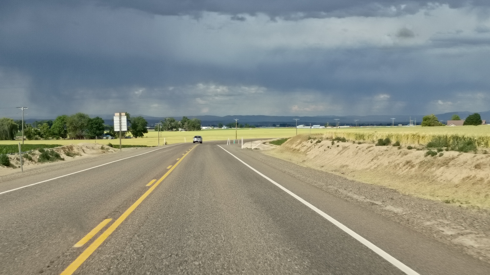
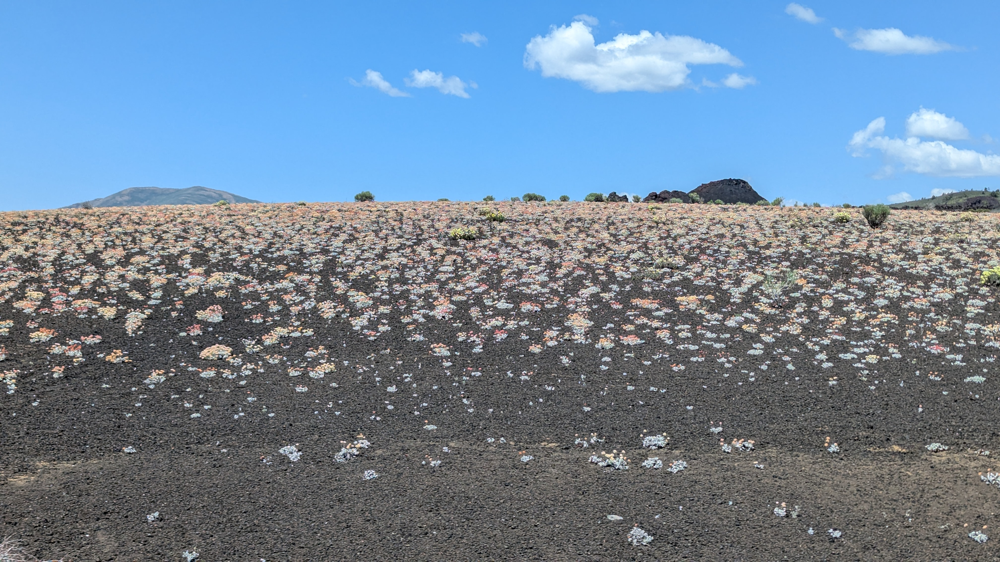
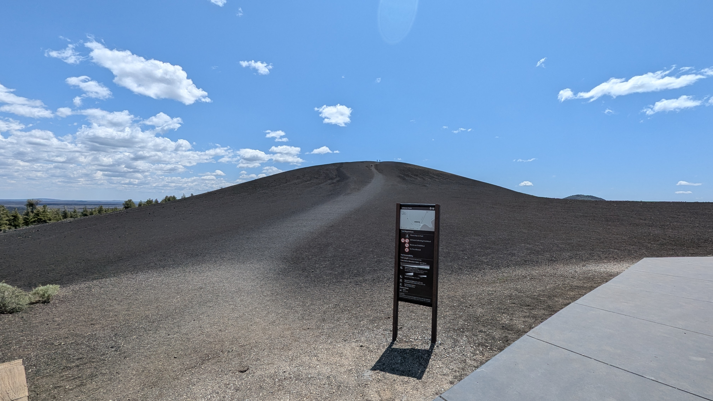

2025.07.15 :: viaggio
Craters of the Moon National Monument and Preserve / Boise / Sun Valley

Driving through western Oregon looked nifty.
Drive through Craters of the Moon.
"Craters of the Moon is a vast ocean of lava flows with scattered islands of cinder cones and sagebrush."
"Some of NASA's best-known astronauts visited Idaho in 1969 to train for their moon missions."

Although much of Craters of the Moon is covered by young lava flows, it supports a surprising diversity of plant communities. Uniquely adapted plants and a variety of abundant vegetation can be found here.
Over 750 different types of plants (taxa) have been identified in the park. Vegetation in different successional stages can be found on lava flows, in cinder areas, on kipukas, and in mountain and riparian areas. Many unique plants have developed ways to adapt and to survive the extreme conditions they face here.
The types and density of vegetation vary considerably and depend on such factors as geology, availability of soil and water, aspect, air temperature, and exposure to wind. The density of vegetation on lava flows depends primarily on the amount of soil available. Although lava flow surfaces support only lichens, vascular plants are able to grow in depressions on those surfaces.

Ketchum, ID in Sun Valley is full of rich and pretty people. We usually stop in the libraries of the places we visit and The Community Library was chock full of beautiful woodword and had the nicest bathrooms we've ever seen in a library - so fancy!
After Ketchum we went for a drive a bit to the north and west.
Boise is a groovy place. Lots to do. Lots to see. Nifty folk.